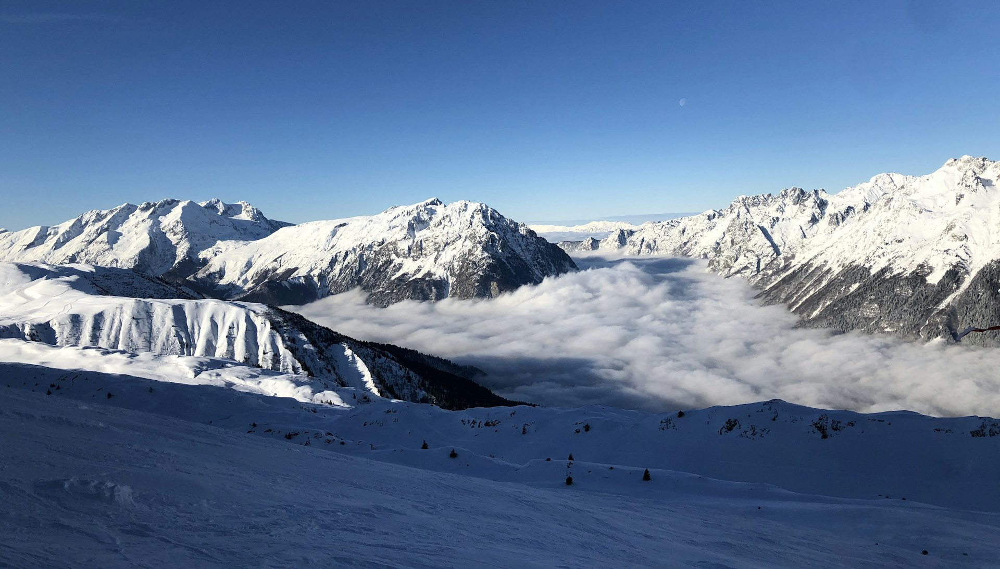

Où partir en janvier 2027 en France : nos idées et l’agenda
Le mois le plus calme de l’hiver : ski sans la foule, Monaco en fête, soleil sur la Riviera et dernières grandes expositions à Paris.
Photo : yelr / Unsplash
Janvier est le mois creux de l’hiver : les fêtes sont passées, les vacances de février n’ont pas commencé et les trains comme les stations sont moins chargés. C’est le bon moment pour skier au calme, chercher le soleil sur la Côte d’Azur ou voir les grandes expositions de Paris avant leur fermeture.
L’agenda de janvier 2027
- 3 janv.Derniers jours des marchés de Noël
Nice, Cannes, Monaco et les Tuileries ferment le 3 janvier 2027 ; le marché des Champs-Élysées dure jusqu’au 4.
- 4 janv.Fin des vacances de Noël
Reprise des cours dans toute la France. Jusqu’au 6 février 2027, aucune zone n’est en vacances scolaires.
- 10 janv.Fin de l’exposition Warhol
Au musée du Luxembourg, à Paris. Cezanne au Grand Palais dure jusqu’au 17 janvier.
- 18 janv.Semaine du Rallye Monte-Carlo
Reconnaissances et animations à Monaco, puis la course du jeudi 21 au dimanche 24 janvier 2027, arrivée sur le port Hercule.
- 22 janv.Festival international du cirque de Monte-Carlo
49e édition, du 22 au 31 janvier 2027 à Monaco.
- 24 janv.Fin de l’exposition Marie-Antoinette
Au château de Versailles.
- fin janv.Premiers mimosas
Le mimosa fleurit de janvier à mars entre Bormes-les-Mimosas et Grasse, avec un pic en février.
Nos idées pour janvier
Skier hors vacances scolaires
Du lundi 4 janvier au samedi 6 février 2027, aucune zone n’est en vacances : c’est la période la plus calme de la saison dans les stations des Alpes et des Pyrénées. Pour comparer les prix, voir notre comparatif des forfaits 2026-2027 : de 44 € la journée à Isola 2000 ou Auron à 84,20 € dans les 3 Vallées.
Le Rallye et le cirque à Monaco
Deux grands rendez-vous se suivent à Monaco : le Rallye Monte-Carlo du 21 au 24 janvier, puis le festival du cirque du 22 au 31 janvier. Le TER Nice–Vintimille dessert la gare de Monaco-Monte-Carlo.
Le soleil de la Côte d’Azur
Balades au bord de l’eau, villages perchés sans la foule et premiers mimosas sur la Route du Mimosa. Les grandes fêtes (Carnaval de Nice, Fête du Citron) arrivent en février.
Les expositions de Paris
Dernières semaines pour Warhol au musée du Luxembourg (10 janvier), Cezanne au Grand Palais (17 janvier) et Marie-Antoinette à Versailles (24 janvier 2027).
Nos conseils
- Vérifiez l’enneigement avant de partir : en début de saison, les stations les plus hautes sont les plus sûres.
- Au ski, réservez avant le 6 février : ensuite, les vacances de février commencent pour la zone C.
- Pour Monaco pendant le Rallye, venez en train : les parkings sont très demandés.
Dates relevées en novembre 2026 (Automobile Club de Monaco, Comité régional du tourisme Côte d’Azur, sites des musées) ; vérifiez avant de partir.
Nos guides pour l’hiver

Activités à réserver
Deux idées à réserver pour janvier.
-
Cours de ski et activités dans les Alpes
Moniteurs, sorties hors-piste et raquettes.
-
Billets et visites à Monaco
Musée océanographique, Palais princier, visites guidées du Rocher.
Liens partenaires.
Vous partez pendant les fêtes ? Voir notre calendrier des vacances de Noël 2026.
Questions fréquentes
Où partir en France en janvier ?
Au ski hors vacances scolaires (du 4 janvier au 6 février 2027), sur la Côte d’Azur pour le soleil et les premiers mimosas, à Monaco pour le Rallye Monte-Carlo (21-24 janvier) et le festival du cirque (22-31 janvier), ou à Paris pour les grandes expositions.
Quand a lieu le festival du cirque de Monte-Carlo 2027 ?
La 49e édition du Festival international du cirque de Monte-Carlo a lieu du 22 au 31 janvier 2027, à Monaco.
Janvier est-il un bon mois pour skier ?
Oui : entre la fin des vacances de Noël (4 janvier 2027) et le début des vacances de février (6 février pour la zone C), aucune zone n’est en vacances, les pistes et les hébergements sont moins chargés.